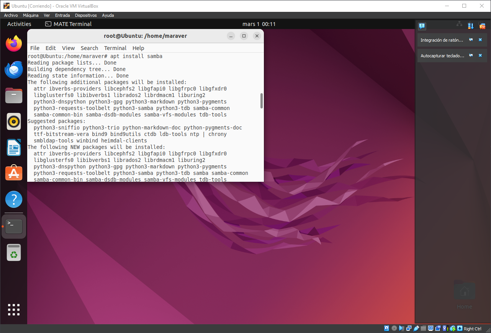

SAMBA
Para instalar SAMBA unicamente deberemos introducir un comando en la terminal.
Samba es un proyecto de software libre que implementa el protocolo de archivos compartidos de Windows para Sistemas operativos de tipo UNIX
> apt install samba
Deberemos confirmar una vez [Y].
